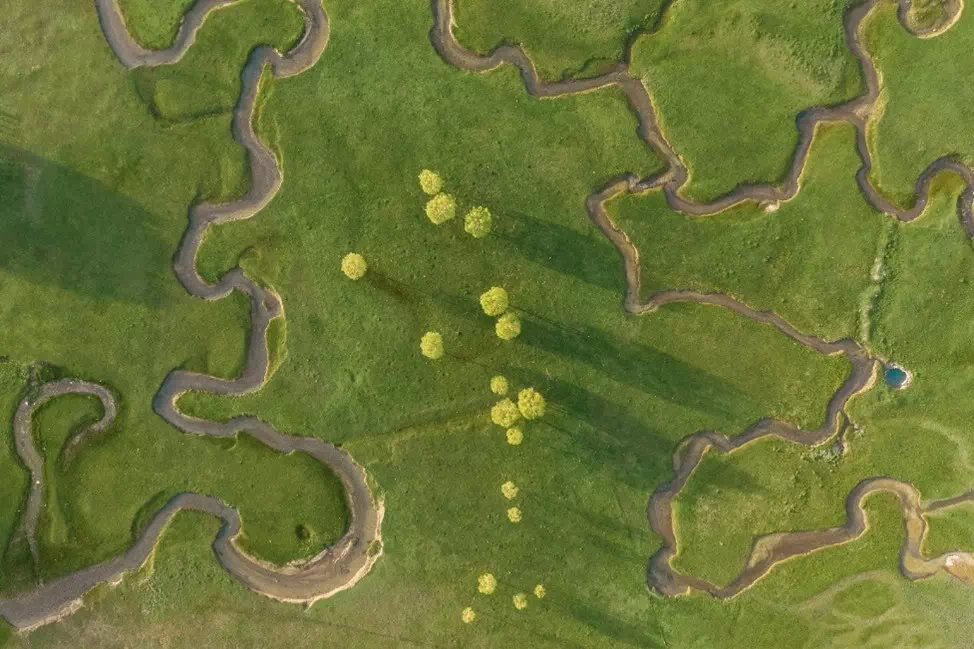
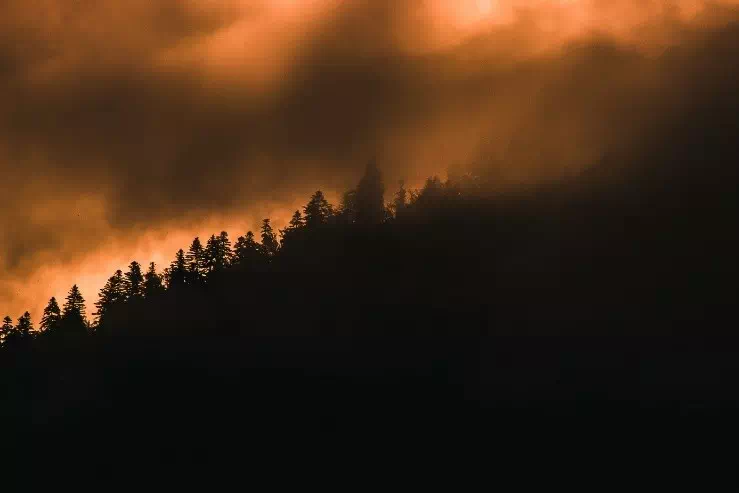

The GreenEO project is featured in the July 2025 edition of Les Échos d’Ecofor, the newsletter of GIP Ecofor. The article highlights GreenEO’s work on wildfire risk forecasting as part of a broader European effort to develop satellite-based services that support sustainable land management and environmental policy.
This recognition highlights the project’s relevance at the intersection of applied research, operational tools, and climate resilience.
GreenEO: A European Initiative for Land, Climate, and Biodiversity

GreenEO is a European research and innovation project (2025–2029) coordinated by the Norwegian Institute for Air Research (NILU), involving eleven partners across Europe. It aims to improve environmental monitoring and decision-making through the integration of satellite Earth observation (EO), AI, and user-driven service development.
GreenEO is structured around four key land-use areas, each representing a domain where improved monitoring can drive more sustainable practices: Cities and Pollution Reduction, Forest Risk Management, Agriculture and Nature Recovery, and Ecosystem and Biodiversity Monitoring. These are linked by a central focus on transformative governance and use cases.
Each component is co-designed with end users to ensure operational relevance and alignment with the goals of the European Green Deal.
Fire Risk Forecasting: A Focus in Les Échos d’Ecofor

The newsletter article places focusses on GreenEO’s contribution to wildfire risk management. Existing fire danger systems rely mainly on empirical weather indices and often overlook key environmental drivers such as fuel moisture or vegetation state. GreenEO offers a more integrated approach, combining satellite data (Sentinel, EPS-SG, MTG), surface models, and probabilistic tools such as FIRELIHOOD.
A key innovation is the inclusion of Fire Radiative Power (FRP) as a dynamic indicator of fire intensity. With a spatial and temporal resolution capable of tracking fire behaviour every 15 minutes, the system enables early detection, short-term forecasting, and retrospective analysis. Pilot demonstrations will be conducted in France and Greece, in collaboration with forest and civil protection stakeholders.
This component of the project is detailed in French in the Ecofor Newsletter. To read the full newsletter, visit: Les Échos d’Ecofor – No. 66 (July 2025)